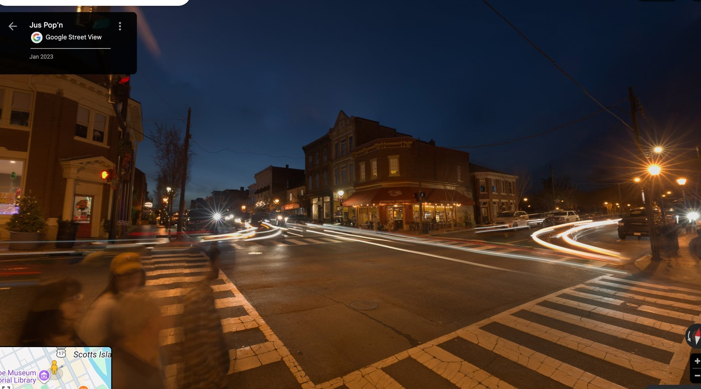

While many believers have been drawn to the conversation around Christian nationalism — debating what it means to influence culture at scale — there's a quieter, more grounded movement that I think matters more: Christian localism. The idea that faithfulness starts where your feet are planted.
Jon Harris recently made a compelling case for it. His thesis is simple but devastating: without rootedness in a real place, conservatism is just ideology — and ideology doesn't survive. People will fight for their home. They won't fight for abstractions.
Jarrin Jackson takes it further in his Live Local Field Manual — a practical guide I've been working through. Jackson, an Oklahoma combat veteran who ran for state office, argues that real change happens at the county and city level, not in D.C. He writes that Christians need to stop outsourcing their civic duty to politicians and start showing up at school boards, city councils, and planning commissions in their own backyards.
As I read both of these men, I kept thinking: this is what I'm attempting to do here — but Harris and Jackson are giving legs to the name: Christian Localism.
"The man who plants a garden is worth more than the man who debates national policy — because the garden actually feeds someone."
— Wendell BerryWhy Fredericksburg
I didn't grow up in Fredericksburg, Virginia. I grew up outside Houston, Texas. But after 20+ years in the Marine Corps — after deployments, duty stations, and enough moves to lose count — I chose this place. I planted my family here. I bought property here. I'm raising three kids on these streets — running with three organizations while serving a church here and mentoring men here.
Harris and Jackson would ascribe the term localism to these endeavors, but to me, I believe it's simple obedience — maybe even a variation of the late Eugene Peterson's "A Long Obedience in the Same Direction."
God placed Adam in a specific garden — not the whole earth, but a garden. He gave specific land to specific tribes. Paul taught that God "determined their appointed times and the boundaries of their habitation" (Acts 17:26, NKJV). There's a theology of place built into Scripture that we've almost completely forgotten.
The average American moves twelve times in a lifetime. That's not freedom — that's rootlessness. And rootlessness produces the exact spiritual desolation we see all around us: men with no identity, no belonging, no direction.
"God determined their appointed times and the boundaries of their habitation"
— Acts 17:26, NKJVThe Five-Front War Is Local
Everything I do through USMC Ministries is built on what I call the Five-Front War — five arenas every man is fighting in simultaneously:
- Heart — Your marriage and family culture
- Spirit — Your discipleship and ministry
- Mind — Your strategy and growth
- Body — Your physical discipline and health
- Provision — Your business and stewardship
Here's what I've realized: every single front is local. You can't lead your family from the cloud. You can't disciple men through abstractions. You can't steward a community you've never walked through.
My marriage plays out on Caroline Street. My boys are growing up in this community — in local churches, schools, in the neighborhoods, on these sidewalks. My Airbnb business (Bow & Arrow Studios) depends on the character of downtown — on the restaurants, the river, the history that draws people here. My training at fit20 Cosner's Corner serves local clients face to face. My stewardship work through C5iSR is about managing resources for this family, in this city, under this economy.
None of this works in the abstract. All of it requires place.
Against the Digital Gnostics
Here's where Harris's piece connects to something else I've been chewing on — C.R. Wiley's argument that AI represents a competing eschatology. Transhumanism promises transcendence through technology. Upload your consciousness. Live forever in the machine. Escape the limitations of the body.
That's digital Gnosticism. And the Bible says no.

God made us embodied. He placed us in gardens. He told us to cultivate specific land. The Incarnation itself is the ultimate refutation of disembodied existence — God didn't email us salvation. He put on flesh and walked among us. In a specific town. Under a specific Roman governor. At a specific time in history (Luke 2:1-2).
If God Himself chose localism, what makes us think we can transcend it?
What This Looks Like in Practice
I'm not writing this from a seminary tower. I'm writing it from a 200-year-old building in downtown Fredericksburg where I run short-term rentals. Here's what Christian localism looks like when it actually hits the pavement:
Invest in Local Property
Own something. Steward something real. Don't just consume a city — commit to it. When you own property, you care about zoning meetings and tax policy and whether the sidewalks are safe for your kids. That's political engagement rooted in something real.
Build Local Institutions
U.S.M.C. Ministries isn't a podcast brand trying to go viral. It's men gathering in the middle of the week — in person and virtually — confessing their failures and holding each other accountable. You can only fake it for so long — faking it from across the room or a screen on Zoom — before someone confronts you and convicts you to your core.
Serve Local Churches
Don't church-hop. Don't stream church. Show up. Serve. Submit to local elders. Spotswood Baptist Church isn't the biggest or flashiest congregation in town — but it's mine, and I'm committed to it.
Mentor Local Men
The brotherhood I'm building isn't followers. It's neighbors. Men I eat with. Men whose wives know my wife. Men whose kids play with my kids. That's how virtue is transmitted — not through content, but through proximity.
Engage Local Politics
My work restoring historic Fredericksburg isn't a national movement. It's me showing up at city council, caring about demographics, engaging churches about the future of our city. Edmund Burke was right: "man acts from adequate motives relative to his interest." My interest is right here.

The Marine Connection
Harris quotes J.D. Vance: "People will not fight for abstractions, but they will fight for their home."
Every Marine knows this instinctively. We didn't fight for geopolitical theory. We fought for the man next to us. For our families back home. For a flag that represented a place — not just an idea, but a land with soil and rivers and street addresses where our people live.
The same principle applies to spiritual warfare. You don't fight the principalities and powers by tweeting about culture war. You fight them by leading your family in prayer on Caroline Street. By teaching your son to respect women at the dinner table. By opening your home to broken men who need a meal and a conversation and a Bible.
That's localism. That's ministry. That's the Kingdom of God advancing — one household, one block, one city at a time.
"What I stand for is what I stand on."
— Wendell Berry"To everything there is a season, a time for every purpose under heaven... He has made everything beautiful in its time."
— Eccl. 3:1 & 3:11 (NKJV)Read Jon Harris's full piece: The Case for Christian Localism